Godot Start
-
godot engine utils and sample, example, demo, tutorial, learning, course
-
这是一个关于godot的基本使用示例和学习教程的工程项目，B站配套视频教程
-
godot start学习交流qq群，710511812
godot start项目下载
-
github
-
为了防止github时不时被墙，可以把git设置一个代理，科学上网
git下载代码慢的解决方法|无法下载代码的解决方法
git config --global http.proxy http://127.0.0.1:10809
git config --global https.proxy https://127.0.0.1:10809
- godot start学习交流群，710511812
为什么选择godot，而不选择cocos, unity, ue
-
godot比cocos, unity, ue简单，更加易上手
-
godot和cocos对比
- godot的源代码比cocos的源代码少一倍，所以godot源代码更加的简洁，简洁的代码更容易学习底层原理
- cocos主要都用在2D方面，2D方面godot支持的更加全面
- GDScript比JavaScript更加简单，因为GDScript是定制过后的语言
-
godot和unity对比
- unity代码不开源，但是即使开源unity的源代码体积绝对大于godot一倍以上
- godot安装包50M，unity安装几个g
- 目前2d方面godot优于unity，3d方面unity优于godot，godot4.0有望大大缩小和unity的差距
- GDScript学起来也比unity的C#和Lua简单
大部分使用unity的开发人员都在使用Lua做开发，虽然unity官方说的是用C#，但是C#不能热更新，所以实际上工作用的大部分使用的是能够热更新的Lua 比如原神就有用到Lua来去做热更新 现在需要频繁更新的功能，比如活动，在王者荣耀中这些活动大部分都是用h5页面去做了，这个只需要JavaScript就可以了，比较完美和超前的解决方案 所以unity的语言比较杂，用C#，Lua，Javascript都有可能 GDScript兼顾性能的同时，还带来比较简洁的语法，还可以热更新。 因为godot只需要用一个GDScript语言，所以远远比unity简单 -
godot和ue对比
- 自主可控(避免被“卡脖子”)，从开源软件的角度分析，godot是游戏引擎界的Linux，ue和unity算是Windows
- ue虽然开源源代码，但是代码量太大，历史包袱太重，不适合深入研究底层代码的人 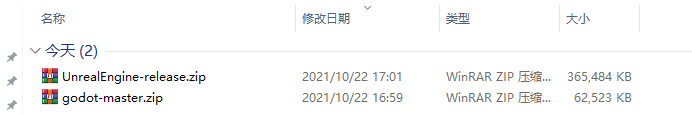
-
godot的作者尽最大努力的减少第三方库的依赖，最终使其代码非常精简，适合学习
-
源代码开源，不收费，unity和ue都是要收费的，ue超过100万美元触发5%的分成费用


-
使用godot你既可以用GDScript去编写代码，也可以用C++去编写代码，还可以去改底层引擎代码
-
用godot你能感觉我能把控底层，我能把控每一行代码的底层细节，这个是程序员的浪漫，godot在国外比较火是有原因的
为使用godot我应该选择什么语言，C# or GDScript
- GDScript快速加载无需编译，无任何等待
- GDScript有内置的高性能类型入Vector，更加有效率
- GDScript多线程支持更加友好，其它脚本多线程支持很差
- GDScript直接由godot内置引擎解析
- GDScript没有gc，没有垃圾回收器，C#带GC垃圾回收器的语言虽然也是内存安全的，但由于GC的存在，已与底层无缘
- gds更加简单，支持的更加完整，而且是脚本可以热更新
- C#很多库用不了，有限制，如果是为了性能可以在godot中使用C++
- 通过学习GDScript也可以学到一些编译原理的知识
- godot不仅仅是一个游戏引擎，而且还是一个优质的学习资源
- C#对于godot来说比较重，推荐gds
参考资料
1. godot的界面介绍
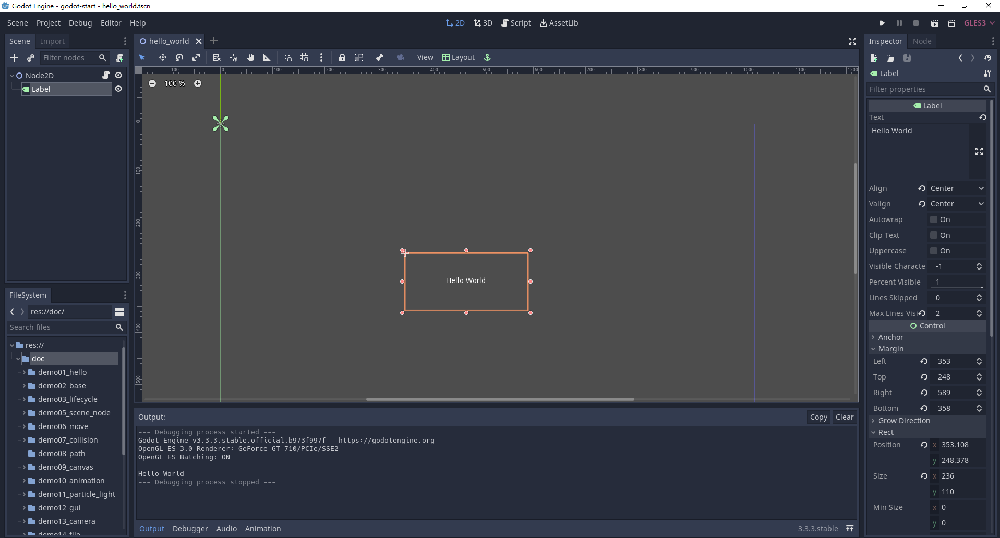
侧面分栏（Dock）
-
点击侧面分栏的右上角可以调整分栏的位置
-
左侧面分栏具体包括：
- 文件系统（FileSystem），显示了当前项目中所有的资源文件
- 导入（Import），显示了文件系统分栏中所选资源文件的导入设置。
- 场景（Scene），按照层级结构显示当前场景中的所有节点，可以简单的理解为一个游戏里的场景/关卡
-
右侧面分栏具体包括：
- 属性（Inspector），显示了场景分栏中所选节点的属性。
- 节点（Node），显示了与当前场景分栏中所选节点对应的一些“信息”。
中间面板：
-
主工作区（Workspace）
- 2D，当在场景分栏中所选节点为2D类型时，会自动进入此工作区。
- 3D，当在场景分栏中所选节点为3D类型时，会自动进入此工作区。
- 脚本（Script），此工作区可以对当前项目中的脚本进行编辑。
- 资源库（AssetLib），可以搜索并浏览网站上的资源
-
底部面板（Bottom Panel）
- 隐藏
-
与Unity和UE4不同的是：Godot这种布局关系当前是相对固定的，即它不能随意调整任意一个面板的位置或脱离成独立的窗口。虽然这看似是一个缺点，不过从某种程度上讲也让引擎变得更简单了。
-
如果布局乱了，恢复一下就可以了，Editor | Editor Layout | Default
2. 场景和资源
- 场景 Scene ，就是一个游戏里的场景 / 关卡
- 创建场景，在res面板的文件夹下右键，New Scene创建场景
- 资源 Asset，指游戏里用到的素材、脚本等数据文件
比如，常用的几种类型:
Texture 图片素材 ( *.jpg / *.png)
Audio音频素材 ( *.mp3)
程序脚本GdScript ( *.gd)
- 可以对素材执行删除 Delete 、重命名 Rename 等操作
3. 场景视图和游戏视图
-
场景视图Scene ，即场景编辑器窗口，默认地，创建了一个场景empty
-
鼠标滚轮 ：放大/缩小视图
-
鼠标右键拖拽：平移视图
-
网格，每一个大网格包括8*8的小网格，每个小网格8个像素
每一个小格子为：8像素 x 8像素
每一个大格子为：64像素 x 64像素
-
场景视图中的蓝色框区域是可见的范围，对应的就是运行游戏的时候的游戏视图
-
本教程所有的每节课都很简单，这是因为对godot的知识做了拆解，把复杂的知识拆解为一个一个简单的知识点
-
然后把每个简单的知识点单独作为一节课，所以整个课程的难度是一种渐进式的
-
复杂的东西都是由一个一个简单的知识构成的，不要觉得课程简单，如果简单的东西不熟练不练习，后面的课程很可能会更不上
4. 游戏对象（节点）
-
游戏对象 Node，就是场景中包含的内容，godot所有操作都是基于节点Node
-
演示：向Scene窗口里添加几个图片
1 准备图片素材
2 把图片拖到2D游戏场景中
3 在Scene窗口中，观察新加的游戏对象
- 游戏对象的简单操作：
1 选中游戏对象
从左侧的层次管理器（Scene窗口）中选中游戏对象
2 移动游戏对象
选用移动工具，拖动小方块
3 修改对象名字
在Scene窗口中，可以修改名字、删除对象等操作
5. 坐标系

- 选择移动工具，移动一个对象
- 可以通过鼠标去移动游戏对象，也可以通过键盘方向键移动游戏对象，也可以手动修改position的坐标x和y去更加精确的移动对象
在 Inspector 属性面板：
观察对象的坐标 Position: x, y
可以发现，对象的坐标会随之变化
- 世界坐标系，又称为全局坐标系
y轴向下为正
x轴向右为正
一个像素在真实世界中，可以自行约定，比如约定1像素=1米
-
相对坐标系，又称为局部坐标系或者本地坐标系，相对于父节点的坐标，godot的坐标都是相对坐标
-
全局坐标和局部坐标可以相互转化
Node2D及其子节点的位置可以使用position和gloabl_position来控制，其中，前者是该节点相对于父节点的相对位置，后者是全局位置。
简而言之，position的坐标系是以父节点的位置坐标为原点的坐标系，方向，还是水平向右为x轴正方向，竖直向下为y轴正方向。
需要注意的是，全局位置是以场景的左上角为原点的，并不是以根结点的位置作为原点的
6. 节点的基础操作
- Q，选择工具，最强大的工具
Alt + 拖曳边框缩放点，保持选中目标中心位置不变进行缩放
Shift + 等比列缩放
Ctrl + 鼠标拖曳，以pivot为中心旋转当前对象
- W，移动工具，改变 Position
Move Mode 对象的移动：
单独改变X坐标
单独改变Y坐标
拖拽中间的方块，可以任意拖动
也可以直接在 Inspector 中输入坐标，会更精确一些
- R，旋转工具，改变 Rotation
轴心点，又称中心点，是节点的旋转中心
V，移动轴心点，Shift + V 拖拽轴心点
中心点是一个物体的中心，当我们对物体进行操作的时候，都是以中心点为中心进行对物体的操作
轴心点可以理解为把物体抽象成一个点，物体的位置就是指其轴心点的位置，就是该物体坐标系的原点
后面的课程会继续介绍轴心点
Rotate Mode 对象的旋转
沿轴心点旋转
- S，缩放工具，改变 Scale
Scale Mode 对象的缩放
沿 X 轴缩放
沿 Y 轴缩放
拖拽中间的小方块，X 和 Y 等比例缩放
- F，居中选取对象，非常有用的快捷键
7. 节点操作的工具，多节点选择，轴心点，平滑，尺子
- 多节点选择工具，show a list，主要用来精确选择层叠在一起的节点
- 轴心点工具，移动轴心点，和选择工具中的快捷键V有同样的作用
- 平滑工具，固定场景
- 尺子工具，量图片或者节点的像素
8. 智能对齐Snap和锁定节点
- 智能对齐，Smart Snap
- 网格对齐，Grid Snap
- 锁定节点，使其不能移动
- 子节点不可选中
1. 节点的父子关系
-
在层级树中，对象 (节点) 呈树形显示，一个节点下面，也可以下挂子节点
-
演示：
1 添加两个对象
2 拖拽一个对象到另一个对象，成为子对象 (子节点)
3 移动父对象、旋转父对象，观察
可以发现，当父对象移动时，子对象随之移动
- 理解相对坐标
子对象的坐标轴，是相对于父对象的
1 移动父对象时，子对象的 Position 不发生变化
2 旋转父对象时，子对象的 Rotation 不发生变化
2. 节点的显示和隐藏
- 删除游戏对象
右键 Delete ，或者键盘 Delete 均可
- 恢复
CTRL + Z ，撤销上一步操作
- 更改节点对象名字
右键 Rename，或者双击节点修改
- 显示 / 隐藏
在 Inspector 里，勾选 Visible 复选框，或者在节点右侧点击Toggle Visibility
- 设置长宽比
在 Project | Project Settings | Display | Window 中可以设置长宽比
3. 游戏节点的显示顺序
- 在2D画面中，两个对象如果重叠，谁显示在上面呢？
- 按照节点的顺序
- 在数据结构上的专业术语叫树的深度优先遍历，深度优先遍历的顺序就是最后显示的顺序


4. pivot，轴心点
-
轴心点也叫中心点，中心点是一个物体的中心，当我们对物体进行操作的时候，都是以中心点为中心进行对物体的操作
-
轴心点可以理解为把物体抽象成一个点，物体的位置就是指其轴心点的位置，就是该物体坐标系的原点
-
主要用于旋转和决定对象的位置
-
轴心 Pivot ，指旋转轴、坐标基准点，默认在对象的几何中心
-
轴心的作用：
- 旋转轴，当旋转对象时，是以 Pivot 为轴心来去旋转对象的
- 坐标系的原点，当移动对象时，是以 Pivot 为中心来计算位置Position的
-
添加一个图片，设置其 Pivot 位置，多练习一下，不及小步无以至千里
5. anchor，锚点
- 是一个点，锚点描述的是一个对象的Margin，相对于锚点的坐标
- 锚点的left，top，right，bottom是相对于父节点的值
- 主要是用于描述子节点相对于父节点的位置
- 当对一个节点的子节点进行设置锚点时，子节点的锚点范围只能够是父节点的控件区域内。
- 注意任何布局也都是相对于父窗口矩形的
- 主要用于在GUI中描述子节点相对于父节点的位置
- 后面的课程学到GUI中会继续介绍锚点，现在只做了解
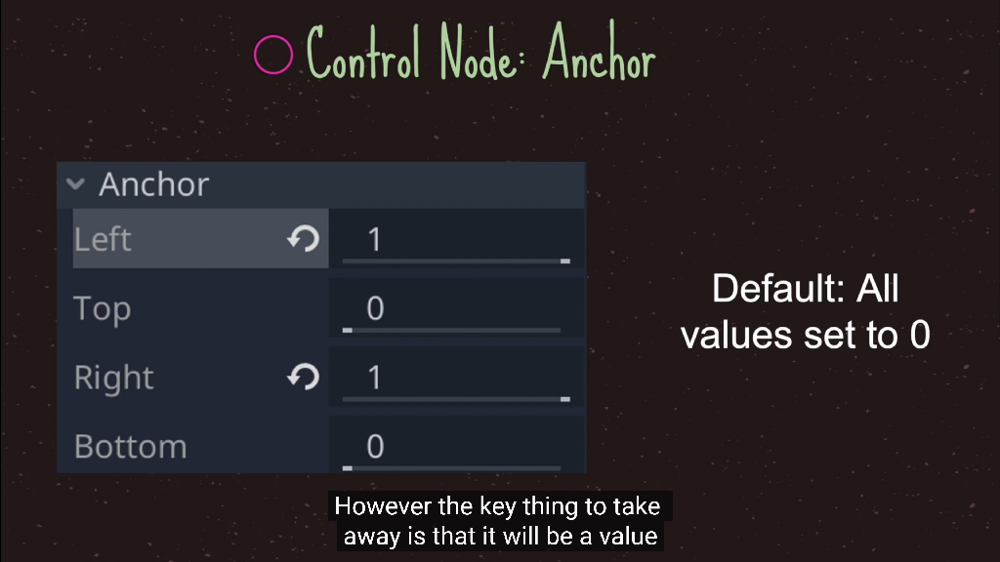
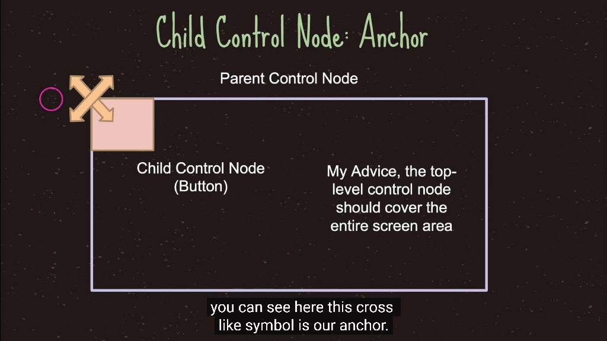
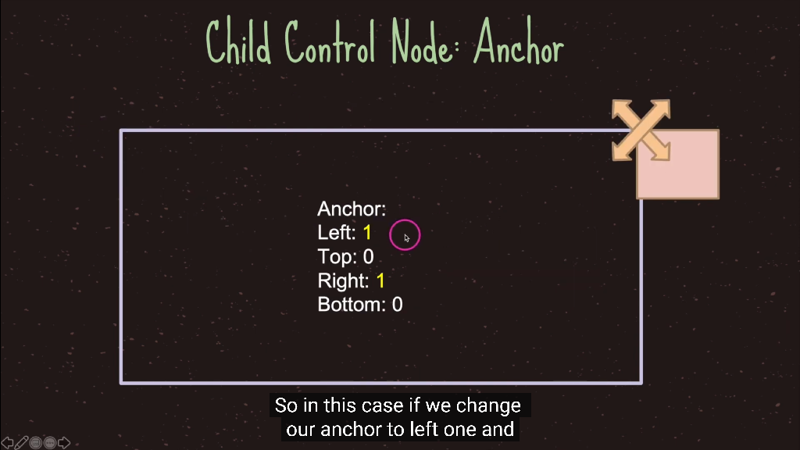
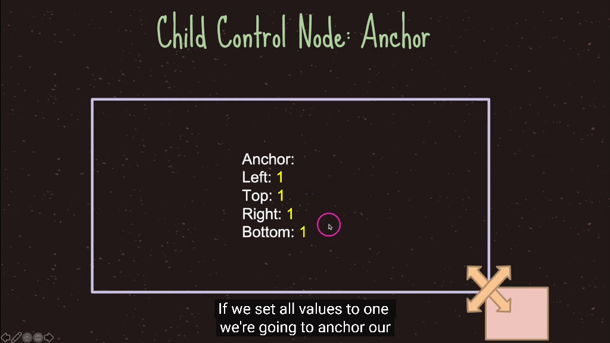

 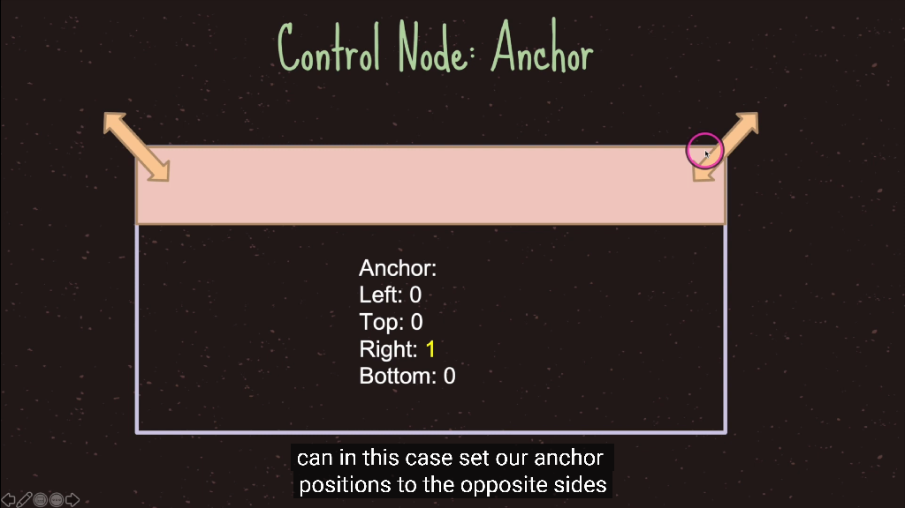
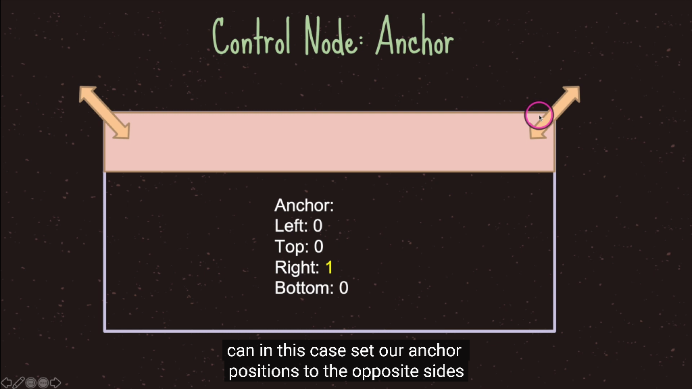
1. 图片素材的准备
-
术语：Sprite 精灵，游戏开发中指一张图片
-
来源不明的图片，切勿在商业用途使用，以免引起版权风险。做一个遵纪守法的好公民。
1. 在学习阶段，可以百度或者从一些资源网站获取，这种方式只能用在学习交流但是无法商用
2. 在正式工作时，公司会有专门的美术人员提供素材
3. 比较大的资源素材商店是是Unity Store
4. 独立开发者可以外包给第三方团队完成
5. 可以从一些素材网站获取正版授权的图片素材，还有一些免版权的网站一样可以获取到
6. 到一些个人外包网站如万能的淘宝或者猪八戒网，外包给大学生或其他找副业赚钱的人
-
推荐几个国外比较好的资源网站，国内的资源网站现在还比较稀缺，需要科学上网
- Untiy Store ，最大的游戏资源网站，可以使用里面的2D图片资源
- craftpix ，国外的一家提供高品质的优质和免费的2D游戏资产的网站
- game dev market ，内容涉及2D、3D、音频和GUI素材，也可以作为一个寻找素材的补充
- kenney ，国外一家做游戏创意原型的资源站
- Fiverr ，一个综合的数字服务提供平台，可以直接在里面找到为我们工作的人，然后他们会提供一些我们定制的服务。
-
一般人很难即精通程序也精通美术，这两种的思维方式不一样。上帝为你打开了一扇门，他同时也很可能关闭了一扇窗户
-
2D 图片的要求：
1 背景图片，一般为 JPG
2 人物、道具等其他图片，一般为PNG ，背景透明
- 演示：PS处理一张图片，去掉背景，做成可用的素材
2. 图片的切割
-
一个 PNG 图片中，可能包含多个素材，使用时需要切割一下
- 第一种方式，将图片用ps之类的工具切割好以后，重新导入godot中使用
- 第二种方式，导入godot中通过Region指定使用的图片，做间接切割
-
一个图片未经切割时，则只包含一个 Sprite素材
3. 图片的合并
-
有时图片太多不好管理，想合并成一整张图片去使用
- 第一种方式，将图片用ps之类的工具合并好以后，重新导入godot中使用
- 第二种方式，在godot中选中多张资源，然后已AtlasTexture的方式重写reimport
-
重写reimport导入过后，也可以把之前的图片删除掉，已节省游戏的包体积和目录文件
4. 图片与渲染器
-
godot是基于节点的，节点有不同的种类，不同种类的节点代表了不同的功能
-
Sprite节点继承于Node2D节点，所以包含Node2D节点的所有属性
-
Sprite节点，用于显示一个Sprite，把一张图片渲染出来
-
节点的种类表示一种功能，而 Sprite 的功能就是显示图片，后面还会说
-
演示和练习：
1 添加一个对象，显示图片1
2 观察 Sprite 的属性值
3 让 Sprite Renderer 更换显示另一张图片，通过拖拽方式或者通过选择文件的方式
4 通过创建一个节点的方式创建Sprite节点
1. 节点和功能的关系
-
节点 Node ，用于实现一种功能，例如，Sprite 节点，用于图片的显示
-
一个节点的功能取决于它挂载了哪些子节点，它包含了哪些功能的子节点，就包含了对应子节点表示的功能
-
节点是可选的，可以添加、可以删除
-
先创建一个空的节点，再选择需要的节点

Sprite用来显示一张图片，再给Sprite增加一个刚体
演示：
1 添加一个空的节点Node
2 挂载 Sprite 节点，然后再挂载RigidBody2D刚体节点
3 移除RigidBody2D刚体节点
2. Node节点
- Node节点，是基类节点，所有节点都会继承Node节点，所以其它类型都包含Node节点的功能
- Node节点是最核心的节点，所有其他类型节点都是由Node节点派生出来的

1. Pause Mode节点的暂停
get_tree().paused = true
节点的三种可能状态有:
Inherit（继承） ：处理与否取决于父、祖父等等节点中第一个非 Inherit 状态的节点。
Stop（停止） ：无条件停止节点（以及 Inherit 模式的子节点）。暂停时该节点不会进行处理。
Process（处理） ：无条件处理节点（以及 Inherit 模式的子节点）。无论暂停与否，该节点都会进行处理。
process方法执行的优先级，对于子节点依然有效
挂载外部的脚本
# 脚本初始化会首先调用这个方法，会在_process()方法之前调用
func _ready():
# get_tree().paused = true
pass
var count = 0
# 每一帧都会调用这个方法
func _process(delta):
count = count + 1
if (count % 60 == 0):
print("parent node")
pass
3. CanvasItem节点
-
CanvasItem节点，CanvasItem -> Node
-
Canvas是画布的意思，所以CanvasItem代表了就是可以被绘制节点，可以设置可视化界面和材质的颜色
-
所有的2D节点和GUI节点都继承于CanvasItem节点
-
CanvasItem是按树的树的深度优先遍历顺序绘制的
-
可以通过设置CanvasItem的Show Behind Parent来改变最终渲染到屏幕上的画面顺序
Texture 贴图，附加到物体表面的贴图
Material 材质，物体的质地，指色彩，纹理，光滑度，透明度，反射率，折射率，发光度。实际就是Shader
Shader 着色器，使用代码来渲染图形的技术，可以控制GPU运算图像效果的一段代码
4. Node2D节点
- Node2D节点，Node2d -> CanvasItem -> Node
Node2D节点继承于CanvasItem节点，CanvasItem节点继承于Node节点，所以Node2D节点包括了CanvasItem节点和Node节点的所有功能
Transform ，Node2d节点的基本属性，在后面的脚本编程中，Transform属性是最常用的
表示：
- Position 位置
- Rotation 旋转
- Scale 缩放
5. 自定义节点
-
当发现现有的节点无法支持新的需求的时候，有两种方法去解决，自定义节点或者自定义脚本，核心都是脚本
-
创建GdScrip脚本，叫MyNode，继承Node2D节点，并自定义节点的icon
extends Node2D
class_name MyNode, "res://icon.png"
- 编写脚本，定义变量，编写代码
export var a = 1
export var b:String
-
保存，如果不保存无法看到我们创建到的节点，这一点需要特别注意
-
添加刚刚创建的自定义节点
6. 节点继承
- 通过继承现有节点，来改变已有节点的功能
- 无论是自定义节点还是节点继承，核心都通过脚本控制达到自己想要的效果
- 从下节课开始说GdScript脚本
1. 脚本的定义
- 游戏脚本 Script ，用代码来控制游戏对象
- godot使用 GdScript 作为脚本语言
- 注意：自本章开始，每节课的项目源码都放在了github项目godot-start，可以直接对照示例项目
- 游戏开发，也是一种程序设计，如果是0基础的同学，建议先学习一个强类型语言比如Java，C#，C++，再来学习GdScript就一通百通了
2. 脚本的使用
- 如何使用一个脚本？
新建脚本 hello.gd ，编辑代码 ，保存一下
把脚本挂载到游戏节点上
运行游戏，点 Play Scene 运行当前游戏场景，在 Output 窗口里观察打印输出
3. 认识脚本
- 因为是GdScript是弱类型语言，所以比较自由，但是我们可以约定一些原则让代码更加的规范：
类名必须与文件名相同，且为小写
尽量继承于 Node2D 节点，Node2D 节点中的Transform是我们用的最多的节点
- 常用函数内部执行顺序，_init _ready _process
默认定义了一些事件函数，例如，
_init() 脚本初始化的时候调用，对象的构造器，类似于Java的构造函数construct
_ready() 开始调用一次，可用于初始化脚本
_process(delta) 每帧调用，帧间隔不等，可用于更新游戏
4.变量和数据类型
- 变量是用于存储信息的"容器"。
var x=5;
var y=6;
var z=x+y;
就像代数那样
x=5
y=6
z=x+y
在代数中，我们使用字母（比如 x）来保存值（比如 5）。
通过上面的表达式 z=x+y，我们能够计算出 z 的值为 11。
在 godot 中，这些字母被称为变量。
- gds数据类型分类
- bool，一个字节，默认为false
- int(同C++和Java long)，8个字节，默认为0
- float(同C++和Java double)，8个字节，默认为0
- String，默认为null，字符串可以存储一系列字符，如 "John Doe"。
- 数组
- 对象
- null，变量没有被赋值，则默认为null


5.导出变量
- export关键字可以让变量在编辑器中编辑
# 导出一个数字
export var a = 1
# 导出一个节点路径
export var b:NodePath
# 导出一个节点路径，不同的写法
export(NodePath) var c
# 导出一个文件路径
export(String, FILE) var e
# 导出一个文件路径，以txt结尾
export(String, FILE, "*.txt") var d
# 导出一个资源文件路径
export(Resource) var f
# 导出一个颜色
export(Color, RGB) var g
6.函数
- 函数是可以简单的理解为当它被调用时执行的可重复使用的代码块。
- 函数就是包裹在花括号中的代码块，前面使用了关键词 func，当调用该函数时，会执行函数内的代码。
- 空函数需要使用pass关键字
func sayHello():
# 执行代码
- 调用带参数的函数，在调用函数时，您可以向其传递值，这些值被称为参数。
func sayHello(param1， param2):
# 执行代码
- 带有返回值的函数，有时，我们会希望函数将值返回调用它的地方，通过使用 return 语句就可以实现。
- return方法可以指定返回的类型
func sayHello(param1， param2):
# 执行代码
return x
7.变量的作用域
- 局部作用域，变量在函数内声明，变量为局部作用域，只能在函数内部访问
# 此处不能调用 carName 变量
func myFunction():
var carName = "Volvo";
# 函数内可调用 carName 变量
- 全局变量，变量在函数外定义，即为全局变量，整个脚本文件中都可以使用
var carName = " Volvo";
# 此处可调用 carName 变量
func myFunction():
# 函数内可调用 carName 变量
8. 运算符
- 算术运算符
+ 加法 x=y+2 7 5
- 减法 x=y-2 3 5
* 乘法 x=y*2 10 5
/ 除法 x=y/2 2.5 5
% 取模（余数） x=y%2 1 5
- 赋值运算符，赋值运算符用于给 GdScript 变量赋值
= x=y x=5
+= x+=y x=x+y x=15
-= x-=y x=x-y x=5
*= x*=y x=x*y x=50
/= x/=y x=x/y x=2
%= x%=y x=x%y x=0
- 比较运算符，比较运算符在逻辑语句中使用，以测定变量或值是否相等
== 等于 x==8 false
!= 不等于 x!=8 true
> 大于 x>8 false
< 小于 x<8 true
>= 大于或等于 x>=8 false
<= 小于或等于 x<=8 true
- 逻辑运算符，逻辑运算符用于测定变量或值之间的逻辑。
&& and (x < 10 && y > 1) 为 true
|| or (x==5 || y==5) 为 false
! not !(x==y) 为 true
9. 条件语句
-
通常在写代码时，您总是需要为不同的决定来执行不同的动作。您可以在代码中使用条件语句来完成该任务。
-
if 语句 - 只有当指定条件为 true 时，使用该语句来执行代码
if (condition):
当条件为 true 时执行的代码
- if...else 语句 - 当条件为 true 时执行代码，当条件为 false 时执行其他代码
if (condition):
当条件为 true 时执行的代码
else:
当条件不为 true 时执行的代码
- if...else if....else 语句- 使用该语句来选择多个代码块之一来执行
if (condition1):
当条件 1 为 true 时执行的代码
else if (condition2):
当条件 2 为 true 时执行的代码
else:
当条件 1 和 条件 2 都不为 true 时执行的代码
- match(switch) 语句 - 使用该语句来选择多个代码块之一来执行
10. 循环语句
- 循环可以将代码块执行指定的次数，如果您希望一遍又一遍地运行相同的代码，并且每次的值都不同，那么使用循环是很方便的
- for
- while
- break 语句跳出循环后，会继续执行该循环之后的代码（如果有的话）
- continue 语句中断循环中的迭代，如果出现了指定的条件，然后继续循环中的下一个迭代
11. 数组和字典的遍历
- 数组遍历
func arrayIterator():
# range等价于for(int i = 0; i < 20; i++)
print("数组遍历方法1：")
for i in range(3):
print(i)
print("数组遍历方法2：")
for ele in arr:
print(ele)
print("数组遍历方法3：")
for index in range(arr.size()):
print(arr[index])
- 字典遍历
func dictionaryIterator():
print("字典遍历方法1：")
for key in dict:
print("key:" + key as String)
print("value:" + dict[key] as String)
print("字典遍历方法2：")
for key in dict.keys():
print("key:" + key as String)
print("value:" + dict[key] as String)
print("字典遍历方法3：")
for value in dict.values():
print("value:" + value as String)
12. 静态变量和静态方法
- const变量（静态变量）
const ANSWER = 42
- 静态方法
static func getAnswer():
return ANSWER
13. 对象
- 真实生活中的对象，属性和方法
- 真实生活中，一辆汽车是一个对象。对象有它的属性，如重量和颜色等，方法有启动停止等
# Inner class，默认继承Object
class Animal:
extends Object # 如果不指定继承的类，默认基础Object
const STATIC_FIELD = "静态变量"
# 属性
var height: int
func _init():
print("Animal 构造方法")
func move():
print("animal，移动")
static func staticFuction():
pass
14. 调试
- 在编写 GdScript 时，如果没有调试工具将是一件很痛苦的事情。
- 你的代码可能包含语法错误，逻辑错误，有了调试工具，这些错误比较容易发现。
15. 参考资料
- godot官方文档
- Godot Tutorials的GDScript Fundamentals Tutorial Series，youtube播放量最高的godot教程视频
- Godot Tutorials的Godot Basics Tutorial Series，youtube播放量最高的godot教程视频
- B站视频
1. 内存管理free
-
godot中的对象分为两种
- 引用计数对象，继承于Reference，当没有引用时会被自动回收
- 非引用计数对象，没有继承于Reference，自能自己手动回收,free或queue_free
-
在godot中，移除一个节点并不会从节点中删除，必须手动调用free或queue_free

2. 垃圾回收的缺点

- GdScript没有垃圾回收，虽然有着内存泄露的风险，但是也保证了性能
3. 引用计数算法
-
对于创建的每一个对象都有一个与之关联的计数器，这个计数器记录着该对象被使用的次数
-
可以立即回收垃圾。因为每个对象在被引用次数为0的时候，是立即就可以知道的。
-
没有暂停时间。这个很容易理解，对象的回收根本不需要另外的GC线程专门去做，业务线程自己就搞定了。
-
不需要stop the world，当然，在多线程的情况下，必要的同步和互斥操作还是需要的。
-
一个致命缺陷是循环引用，就是， objA引用了objB，objB也引用了objA。这种情况下，这两个对象是不能被回收的。
-
可以使用unreference去释放引用计数的对象
-
引用计数既保留了性能，也保证了更加高效的性能

1. 场景树
- Nodes（节点）是在Godot中创建游戏的基本构建块。当一组节点被添加到树中时，它被称为sence（场景），树被称为sence tree（场景树）
节点是可以表示各种专用游戏功能的对象。给定类型的节点可以显示图形，播放动画或表示对象的3D模型。
该节点还包含一组属性，允许你自定义其行为。
你添加到项目中的节点取决于你需要的功能。
它是一个模块化系统，旨在为你提供构建游戏对象的灵活性。
在项目中，你添加的节点将组织为树结构。在树中，节点被添加为其他节点的子节点。
特定节点可以具有任意数量的子节点，但只能有一个父节点。

2. 帧率
- 帧率 Framerate ，指画面每秒更新多少次 (FPS, Frames Per Second)
比如，
FPS = 50 , 即每 20ms 秒更新一次
FPS = 60, 约 16.7ms 秒更新一次
通过代码可以设置，要求 godot 引擎尽量以此帧率运行 ，但实际帧率还是会有偏差
Engine.target_fps = 120


- delta time上一帧的间隔
匀速移动的优化：
var step = 0.8f * deltaTime;
其中，
0.8f 表示每秒位移 0.8 单位

3. 节点的生命周期
- 在Godot中，一个游戏的启动大致流程如下：
Godot的main启动一个进程，加载所需的驱动设备（如渲染设备：GL/GLES/Vulkan等）、音频设备，输入控制器设备等等；
然后进入主循环，加载一个自动创建的对象——SceneTree（场景管理系统对象，它用户管理场景图），
这个对象包含一个RootViewPort节点（它是一个Node），该节点包含一个默认的ViewPort（以便提供默认渲染的输出视口）。
当用户用Godot编辑器创建一个关卡（或场景文件），并设置默认的启动的场景文件，Godot将该场景文件的根节点附加到RootViewPort节点上，
当节点进入场景树（SceneTree），变为活动状态。
按场景树顺序依次回调各个子节点的_init()，_ready()等声明函数。


4. 节点的获取方式
# 获取当前节点
var currentNode1 = $"."
var currentNode2 = self
# 获取父节点
var parentNode1 = get_parent()
var parentNode2 = $"../"
# 获取子节点
var subNode1 = $SubNode2
var subNode2 = $"SubNode2"
var subNode3 = get_node("SubNode2")
# 根节点查找法，会返回节点树从上到下找到的第一个节点
var subNode4 = get_tree().root.find_node("SubNode2", true, false)
5. process和physics_process
- 平时我们看到的动画，实际上是由很多静止的画面连续切换组成的
- 其中每个静止的画面，我们都称为一帧，比如60帧的动画，就是一秒播放60个静止的画面，组成的动画
- godot 的 _process 相当于 unity 的 Update
内部对代码就会在每一帧之前被执行，也就是引擎每渲染一幅的画面之前，都会执行它里面的代码
- godot 的 _physics_process 相当于 unity 的 FixedUpdate
内部的代码会在每个物理帧之前被执行，
因为godot的物理模拟是单独进行的，每次进行物理模拟的时候，如计算一个刚体小球的运动轨迹，每进行一次计算，我们就称为是一进行了一个物理帧，
而每次进行物理模拟之前，都会执行_physics_process中的代码

6. Parent和Owner
-
Parent
- 一个节点的Parent就是场景树上它的父级
-
Owner
- 如果不修改默认Owner的话，可以把它视为节点所在场景的顶部节点，如果该节点本身就是顶部节点那么它的Owner为null
-
静态场景结构中默认的Owner
extends Node
class_name TestNode
func _ready():
var parent_name = "NULL"
var owner_name = "NULL"
if get_parent() != null:
parent_name = get_parent().name
if owner != null:
owner_name = owner.name
print(name + "'s parent is <" + parent_name + "> and it's owner is <" + owner_name + ">" )
node_3's parent is <node_2> and it's owner is <node_0>
node_2's parent is <node_1> and it's owner is <node_0>
node_1's parent is <node_0> and it's owner is <node_0>
node_0's parent is <root> and it's owner is <NULL>
- 动态创建的节点的Owner是null
1. 信号signal
-
信号是用来完成模块或功能之间通信的媒介，其实就是约定了一些方法的回调形式
-
设计模式上叫做观察者设计模式
1. 观察者和被观察者是抽象耦合的，解耦模块
2. 建立一套统一的触发机制
-
Godot引擎官方建议在你的游戏开发中更多的使用信号来完成模块或功能间的通信
-
第一种使用方法
# 第一种信号接受方法，通过在场景中配置信号的接收方法
func _on_Button1_pressed():
print("hello button1")
- 第二种使用方法
# 第二种信号接受方法，通过代码控制信号的接收，更加的灵活，比较推荐方式
func _ready():
$Button2.connect("pressed", self, "onButton2")
func onButton2():
print("button2 pressed")
2. 自定义信号
- 自定义信号
signal mySignal(a, b)
- 发送信号
emit_signal("mySignal", 1, 2)
- 解除绑定信号
disconnect("mySignal", 1, 2)
3. 异步回调yield
- yield, to produce a result, answer, or piece of information，立即结束当前函数调用，无需等待
其本质，就是能让一个函数在执行过程中暂停（挂起），然后在接收到恢复指令以后继续执行的机制。
- yield(obj, signal)，函数立即返回，并且保存当前执行的位置和状态
GDScriptFunctionState yield( Object object=null, String signal="" )
- yield返回GDScriptFunctionState类型对象，类似于Java的CompleteFuture
GDScriptFunctionState 是记录一个协程状态的对象，实际上它就代表(引用)着该协程。
- resume恢复GDScriptFunctionState保存的调用函数状态
- yield的三种用法
- yield()和resmue()组合，yield()来挂起，用resmue()来恢复
- yield(对象,信号S)的形式，把这个协程（即 GDScriptFunctionState）注册为 节点N上信号S的接收者，当 节点N发出信号S以后，函数会恢复执行。
- yield(协程对象C,"completed")的形式，协程失效（即GDScriptFunctionState的is_valid为false）以后，它会释放一个"completed"信号，用这个信号恢复上一层协程。
4. 多线程
- 什么是进程？
电脑中有时会有很多单独运行的程序，每个程序有一个独立的进程，而进程之间是相互独立存在的。比如QQ、浏览器
- 什么是线程？
进程想要执行任务就需要依赖线程。换句话说，就是进程中的最小执行单位就是线程，并且一个进程中至少有一个线程。
- 那什么是多线程？提到多线程这里要说两个概念，就是串行和并行，搞清楚这个，我们才能更好地理解多线程。
- 串行，其实是相对于单条线程来执行多个任务来说的，比如下载一个文件要等到上一个文件下载完
- 并行，下载多个文件，开启多条线程，多个文件同时进行下载，这里是严格意义上的，在同一时刻发生的，并行在时间上是重叠的
1. 屏幕坐标


- 刚开始学习的时候可能有点疑惑，godot的坐标系，原点既然在左上角
- unity，cocos的2d原点都在左下角，就很符合数学里面的象限，左下角的2d坐标系感觉很复合习惯
后来了解到，计算机屏幕是从左上角开始刷新的，2d坐标系左上角为原点可以屏幕坐标系吻合可以提升一点效率。
unity的2d坐标系虽然在左下角，但是unity的屏幕坐标系依然在左上角，不统一。
虽然godot的2d坐标系在左上角的坐标系刚开始看不舒服，但是和屏幕坐标系吻合了，也算一种统一，就不需要untiy2d的那么多概念了，为godot点赞。
因为单论平面内容制作，左上原点更符合视觉习惯，也更符合设计常识，比如ps。

-
世界坐标系：又称为全局坐标系，以场景树的root节点为坐标系原点
-
相对坐标系：又称为局部坐标系或者本地坐标系，相对于父节点的坐标，godot的坐标都是相对坐标
-
屏幕坐标：屏幕的左上角为坐标系原点
-
屏幕分辨率，屏幕分辨率是指纵横向上的像素点数，单位是px，4:3 是最常见屏幕比例

-
屏幕像素和图片像素有什么关系
在屏幕显示图片时，如果屏幕的长宽比、像素数和图片一致，只需要每个屏幕像素用子像素的敏感组合表示出图片上的像素就可以了。
那如果图片像素数和屏幕像素数不一样呢？
当图片像素大于屏幕像素时，屏幕也是进行合并显示的。
比如一张1200W像素的图片，要在300W像素的显示器（长宽比一致）上显示，那么系统就需要将图片像素进行四合一计算然后再显示。
当图片像素数大于屏幕像素数时，高像素图片和低像素图片的显示精细度是一样的！
- 在godot中，一般position的1个单位长度等于1个图片像素
2. 全局和相对坐标的相互转化
- 全局坐标和局部坐标（相对坐标）可以相互转化
Node2D及其子节点的位置可以使用position和gloabl_position来控制。
其中，前者是该节点相对于父节点的相对位置，后者是全局位置。
简而言之，position的坐标系是以父节点的位置坐标为原点的坐标系，方向，还是水平向右为x轴正方向，竖直向下为y轴正方向。
需要注意的是，全局位置是以场景的左上角为原点的，并不是以根结点的位置作为原点的
3. 场景和节点


- 一个游戏可以包含多个场景，但是一个场景中必须有一个根节点，一个根节点可以包含多个不重名的子节点（unity的子节点可以同名），不同名更加符合习惯，为godot点赞。
4. 基本组件
-
CanvasItem节点，CanvasItem -> Node -> Object
-
Canvas是画布的意思，所以CanvasItem代表了就是可以被绘制节点，可以设置可视化界面和材质的颜色
-
所有的2D节点和GUI节点都继承于CanvasItem节点 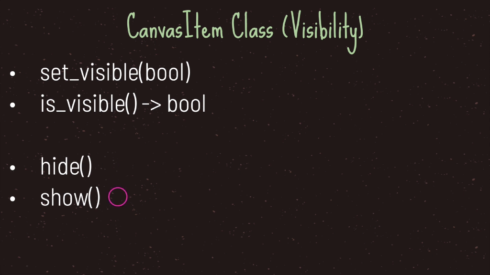
-
Sprite节点，Node2d -> CanvasItem -> Node -> Object
-
用来显示一张图片

-
Texture类，Resource -> Reference -> Object
-
Texture 贴图，附加到物体表面的贴图，实际上就是包含一张Image图片
-
可以用在3D模型中当作贴图，或者2D的Sprite中当作图片，或者GUI的背景 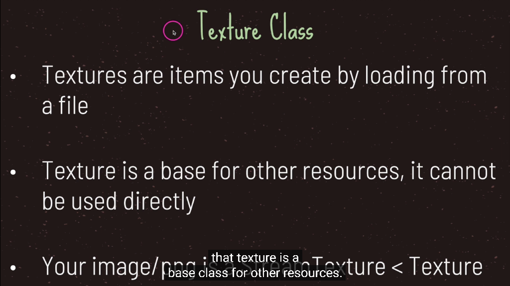
-
Image类，Resource -> Reference -> Object
-
包含了图片的数

-
总结


组件的使用
- Path2D
Contains a Curve2D path for PathFollow2D nodes to follow，Describes a Bézier curve in 2D space.
- PathFollow2D
This node takes its parent Path2D, and returns the coordinates of a point within it, given a distance from the first vertex.
It is useful for making other nodes follow a path, without coding the movement pattern. For that, the nodes must be children of this node.
The descendant nodes will then move accordingly when setting an offset in this node.
- RemoteTransform2D，类似与设计模式中的代理模式
RemoteTransform2D pushes its own Transform2D to another CanvasItem derived Node in the scene.
It can be set to update another Node's position, rotation and/or scale. It can use either global or local coordinates.

- sprite
上世纪70年代，在德州电器公司，一个叫Daniel Hillis的前辈最早把Sprite这个词用在计算机图形上，在展示界面上，
有一些东西在实现层面并不是和整个画面融为一体的，而是『漂浮』在其他画面之上，像『幽灵』一样，所以被称为Sprite。
一张一张的图片组成了一个会动的精灵
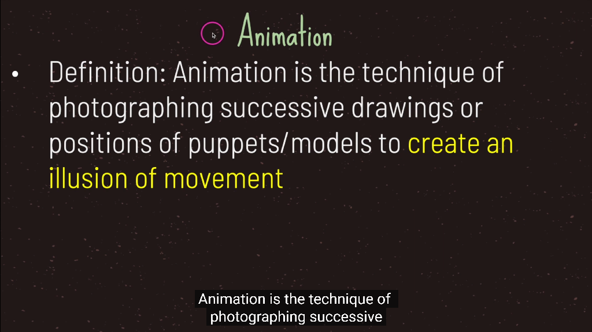


 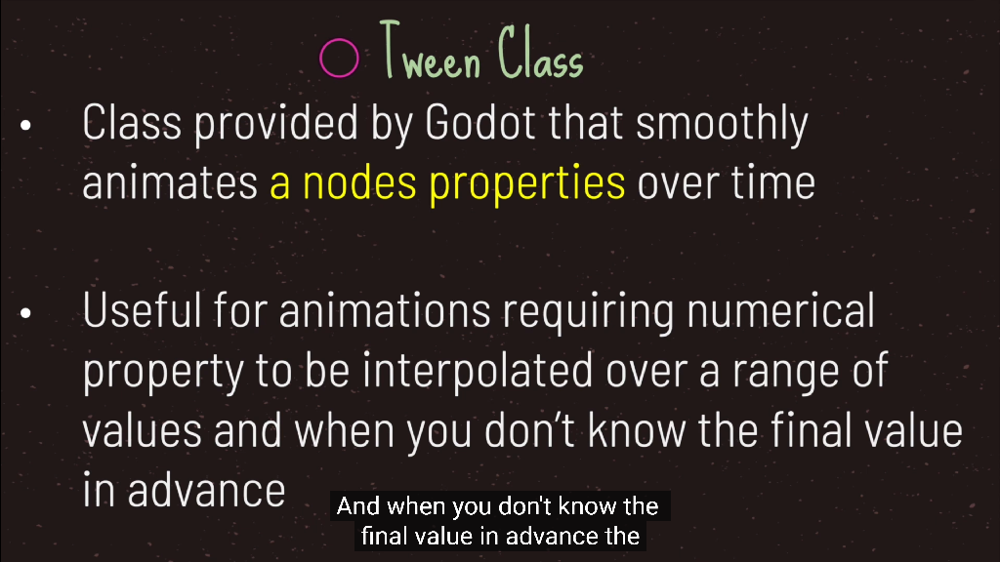
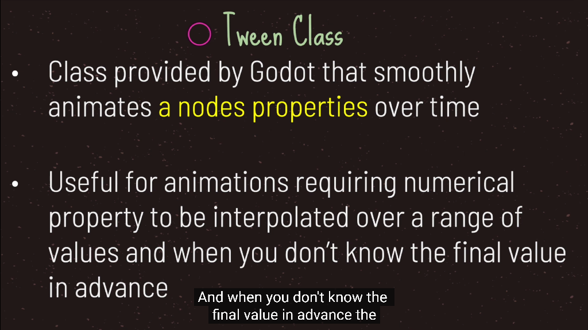

 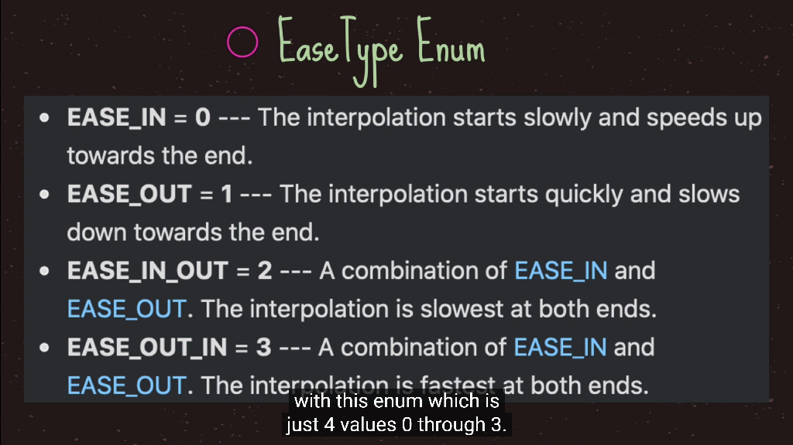
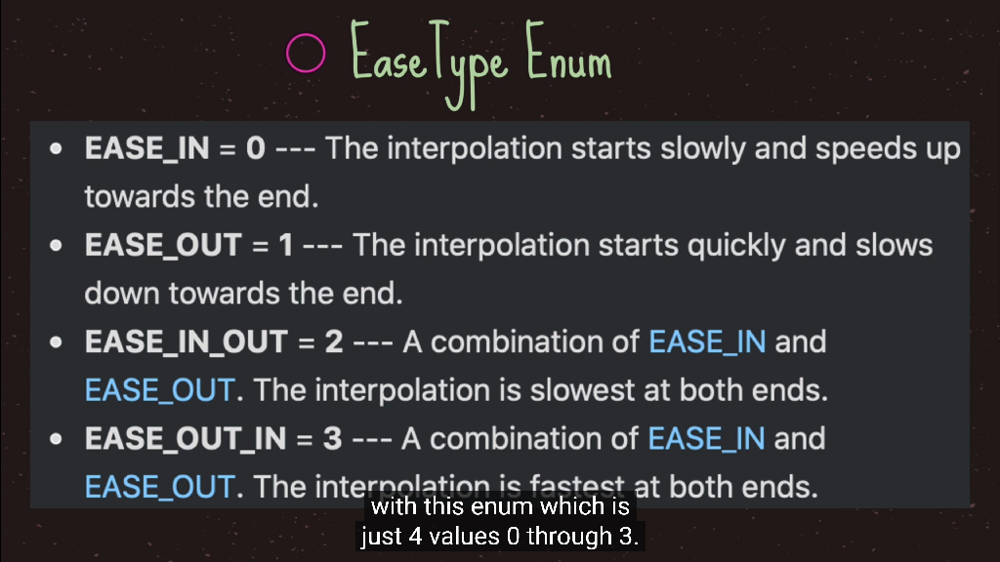


- AnimationPlayer是时间和属性的变化，是一种动画的表现
- AnimatedSprite是序列帧的简便的用法
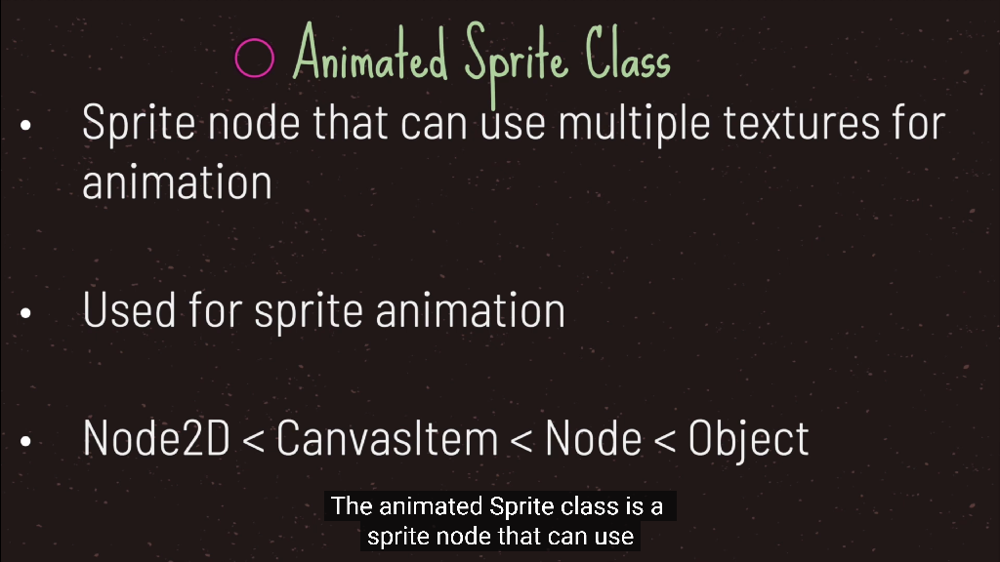 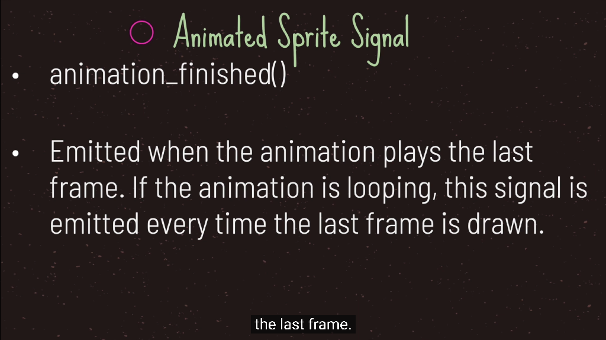 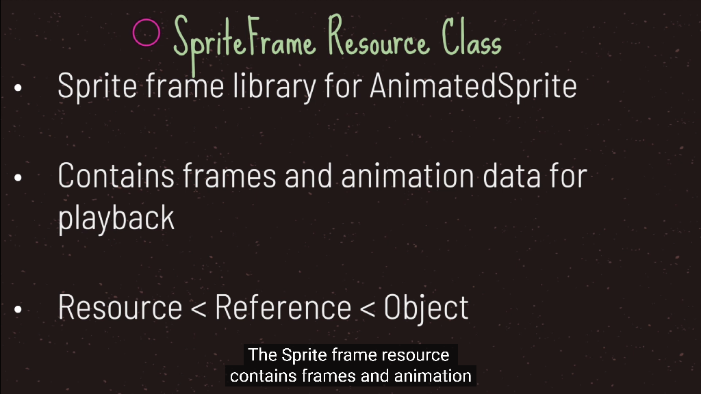


- godot默认不显示中文，需要下载中文的字体
- 字体，https://github.com/adobe-fonts/source-han-sans/releases
思源黑体
由Google和Adobe在2014年7月正式推出的开源字体不仅可以免费商用而且全面支持中文简体、中文繁体（香港）、中文繁体（台湾）、日文和韩文，还有七种字体粗细，整个字形个数接近50万。
免费可商用
controller


camera
viewport(视口，可视化窗口)
- root就是根节点的viewport

canvas layer
- 它是一个节点, 为所有子代和孙代添加一个单独的2D渲染层.Viewport的子节点默认在图层 "0 " 处绘制, 而CanvasLayer将在任何数字层处绘制.
- 数字较大的图层将绘制在数字较小的图层之上.CanvasLayers也有自己的变换, 不依赖于其他层的变换. 这使得当我们对游戏世界的观察发生变化时,UI可以固定在屏幕空间中.
file文件系统
autoload单例模式


一、设计模式六大原则
- 1.单一职责原则
一个类只负责一项职责。
- 2.里氏替换原则
所有引用父类的地方必须能透明地使用其子类的对象。
继承作为面向对象三大特性之一，在给程序设计带来巨大便利的同时，也带来了弊端。
比如使用继承会给程序带来侵入性，程序的可移植性降低，增加了对象间的耦合性，
如果一个类被其他的类所继承，则当这个类需要修改时，必须考虑到所有的子类，并且父类修改后，所有涉及到子类的功能都有可能会产生故障。
里氏替换原则通俗的来讲就是：子类可以扩展父类的功能，但不能改变父类原有的功能。它包含以下4层含义：
子类可以实现父类的抽象方法，但不能覆盖父类的非抽象方法。
子类中可以增加自己特有的方法。
- 3.依赖倒置原则
高层模块不应该依赖低层模块，二者都应该依赖其抽象；抽象不应该依赖细节；细节应该依赖抽象。
依赖倒置原则的核心就是要我们面向接口编程，理解了面向接口编程，也就理解了依赖倒置。
- 4.接口隔离原则
一个类对另一个类的依赖应该建立在最小的接口上。
接口隔离原则的含义是：建立单一接口，不要建立庞大臃肿的接口，尽量细化接口，接口中的方法尽量少。
- 5.迪米特法则
迪米特法则又叫最少知道原则，一个对象应该对其他对象保持最少的了解。
- 6.开闭原则
一个软件实体如类、模块和函数应该对扩展开放，对修改关闭。
二、23种设计模式
1.创建型模式
- 简单工厂：一个工厂类根据传入的参量决定创建出那一种产品类的实例。
- 工厂方法：定义一个创建对象的接口，让子类决定实例化那个类。
- 抽象工厂：创建相关或依赖对象的家族，而无需明确指定具体类。
- 建造者模式：封装一个复杂对象的构建过程，并可以按步骤构造。如StringBuilder的append()
- 单例模式：饿汉式，懒汉式，双重检测，静态内部类，枚举类实现具有天然的线程安全并且避免反射和反序列化漏洞
- 原型模式：prototype，通过复制现有的实例来创建新的实例。如深克隆，浅克隆
2.结构型模式
- 适配器模式：将一个类的方法接口转换成客户希望的另外一个接口。如各种Adapter
- 组合模式：将对象组合成树形结构以表示的层次结构。可以理解成组合，如窗体控件，一个下滑的窗口中包含的List
- 装饰模式：动态的给对象添加新的功能。如Java的IO流
- 代理模式：为其他对象提供一个代理以便控制这个对象的访问。如静态代理，动态代理javaassist
- 亨元模式：通过共享技术来有效的支持大量细粒度的对象。
- 外观模式：facade，对外提供一个统一的方法，来访问子系统中的一群接口。
- 桥接模式：将抽象部分和它的实现部分分离，取代多层继承，多层继承违反单一职责。如DriverManager -- JDBC驱动 -- (MySQL Oracle)
3.行为型模式
- 模板模式：定义一个算法结构，而将一些步骤延迟到子类实现。
- 解释器模式：给定一个语言，定义它的文法的一种表示，并定义一个解释器。如Spring的expression
- 策略模式：定义一系列算法，把他们封装起来，并且使它们可以相互替换。
- 状态模式：允许一个对象在其对象内部状态改变时改变它的行为。
- 观察者模式：对象间的一对多的依赖关系。
- 备忘录模式：在不破坏封装的前提下，保持对象的内部状态，以便提供一个可回滚的操作。
- 中介者模式：用一个中介对象来封装一系列的对象交互。如java反射method.invoke()
- 命令模式：将命令请求封装为一个对象，使得可以用不同的请求来进行参数化。如执行sql语句
- 访问者模式：对于存储再一个集合中的对象，它们可能具有不同的类型，不同的访问者，其访问方式不同。
- 责任链模式：将请求的发送者和接收者解耦，使的多个对象都有处理这个请求的机会。
- 迭代器模式：一种遍历访问聚合对象中各个元素的方法，不暴露该对象的内部结构。如Iterator接口